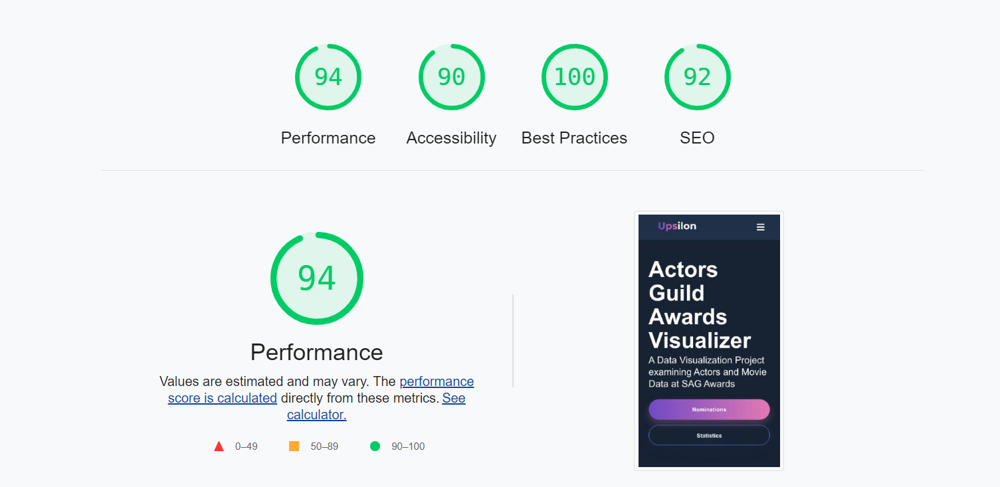
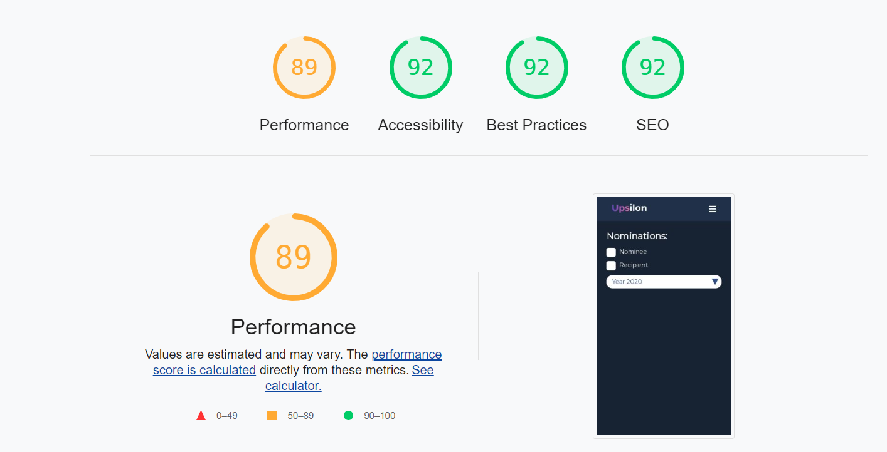
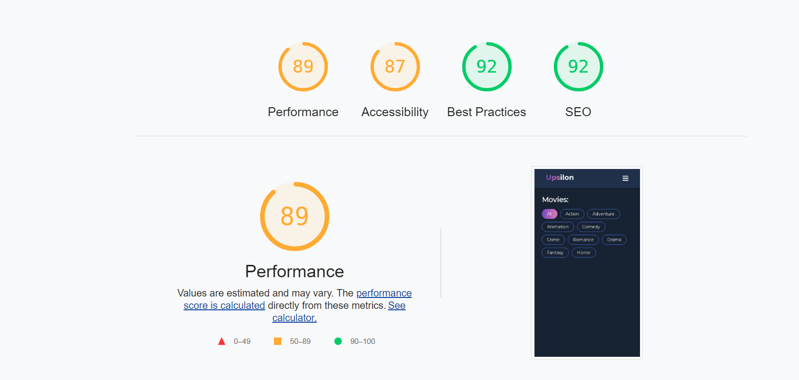
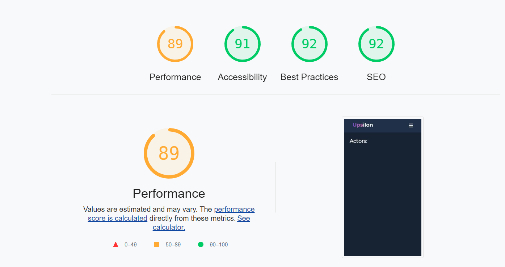
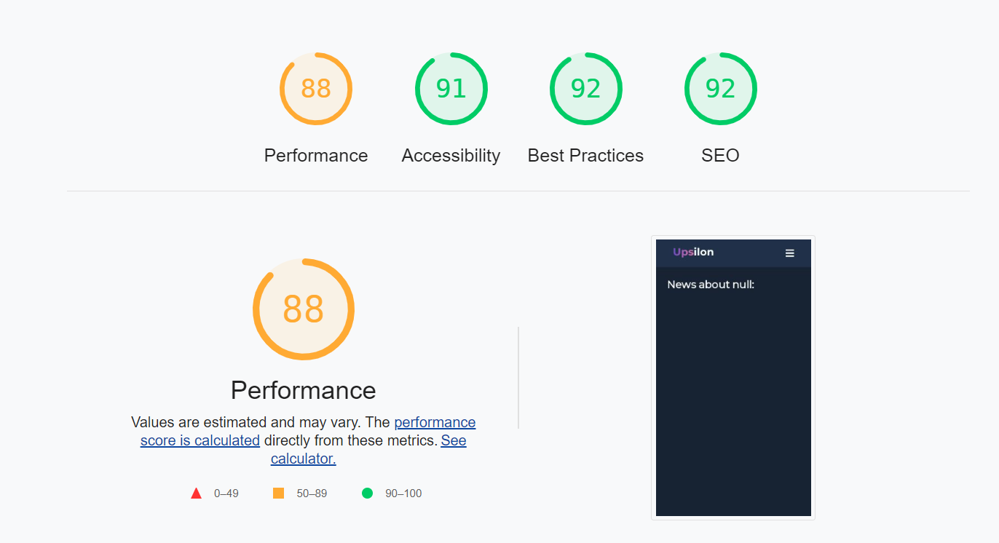
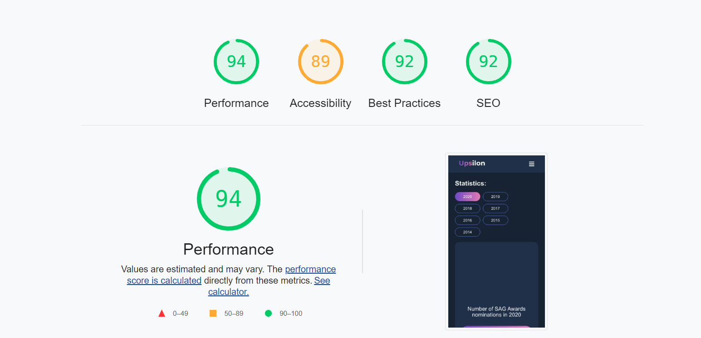
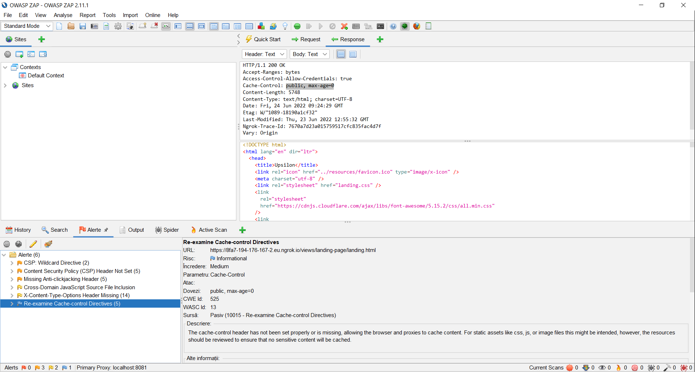

Create a Web tool for flexible visualization of data on actor nominations for the last years at the Screen Actors Guild (SAG) Awards via its own developed REST / GraphQL API. Additional information on each actor and film production can be accessed from The Movie Database (TMDb). The statistics and views generated - at least 3 ways - can be exported in CSV, WebP and SVG formats. The system will also provide support for the news access regarding each nominee, based on external data sources configurable within the developed application.
The role of this technical report sheet is to present details related to the implementation of the project AGA (Actors Guild Awards Visualizer) (category M).
This report in Scholarly HTML format was created based on the IEEE template for System Requirement Specification Documents.
This document is intended for the potential viewers of the website. It will explain the utilities of the website, its interface and what information can be accessed.
Our website is a site with the purpose to provide detailed information about actors and movies, especially those awarded at the Screen Actors Guild Awards 🏆 . For those who are passionate about movies and not only is it the ideal place to find out more information about the film industry and what is a must see 🍿🎥
Actors Guild Awards Visualizer is a data visualization project 📊📈 examining actors and movies data at SAG Awards that also provides additional information on each actor and film production as well as news about that
The project offers the option of exporting different statistics in formats such as CSV, WebP and SVG.
The developed product can be used on any device with a connection to the Internet and a browser installed such as Google Chrome, Mozila Firefox or Microsoft Edge.
Regarding the server, Actors Guild Awards Visualizer will be developed in Node.js and MongoDB was chosen for the database, using MVC architecture and at the client level, the HTML5, CSS3 and JavaScript were used. The site design was made in Figma and the interface is intuitive, and all pages are responsive, the components changing their size, shape or page layout depending on the device used, for a flawless navigation.
Design and content are the most important features of an informational website. It should catch the attention the moment someone enters the website. To reach this goal and make people who access our website to read as much information about the actors as possible, we originally created a design in Figma to know exactly what we would love our site to look like for catching the eye from the first glance.
The minimum software requirements of Actors Guild Awards Visualizer are a working browser and connection to the Internet.
The minimum hardware requirement of our project is a working laptop 💻 or desktop 🖥️ or smartphone 📱 .
Actors Guild Awards Visualizer requires Internet connection. The communication standard we want to use is HTTP.
This page provides details about the main purpose of the application
and allows the user to navigate to other pages of the application.
Landing page contains:
-Navigation bar, located at the top of the page, with the buttons:
Movies, pointing to the movie page, Actors, pointing to the actor
page, statistics, that point to the page with the plots and the
contact, pointing to the contact page
-The actual page that provides details about the main purpose of the
application and the Nomination and Statistics buttons
-Footer, located at the bottom of the page, with the following
options: About Us, Privacy Policy, Facebook, Instagram, Twitter,
Linkedin and Youtube that directs to pages with appropriate
information, as well as the possibility to contact the authors of the
website.
In this page, the user can see information about each film, structured in the form of cards, on the front of them it can be seen the movie poster and the rating, and when the card is turned on the other side a short summary of the film will be displayed.
The user can see cards that contain for each actor his name, his popularity (extracted from the TMDB API) and an image with him.
On this page, are displayed statistics made in plotly with information from our database stored in MongoDB. These are in 3 formats: bar chart, pie chart and scatter plot and illustrate the nominees and recipients at Screen Actors Guild Awards. These statistics will be exported in formats such as CSV, WebP and SVG.
The user can see information from the database in MongoDB also illustrated in the form of cards. If a trophy appears, it means that the actor or that film production has been awarded.
Users can view the latest news about the selected actor.
Users can send a message containing feedback or any message that they wish to send to the authors of the application.
We will load the screen_actor_guild_awards.csv file that contains all the Screen Actors Guild Awards nominations, SAG Awards to MongoDB. Our database will have the following fields: year, category, full_name, show and won ( true if winner ), that we will use to generate the diagrams in plotly.
We make calls to TMDB API to get additional information on each actor and film production.
We make calls directly to NEWS API to get news 📰 about the actor selected by the user.
For each page we calculated a score via https://web.dev/measure/.
-Landing page: average of 94:
-Nominations page: average of 91:
-Movies page: average of 90:
-Actors page: average of 91:
-News page: average of 90:
-Statistics page: average of 91:
-Our site is protected by sql injection, as it does not allow the alteration or deletion of data from databases using urls. In the case of both the nomination page and the statistics page, the filtering takes place on the front, and the user can select the filtering criterion by pressing a button and therefore cannot modify the url according to his own choice.
-We also took measures to ensure protection against cross site scripting attacks. All instances of innerHTML have been modified to innerText to avoid rendering malicious scripts. Most of the website interaction is based on predefined filters, this way we avoided information completed by the user that could be rendered in the form of innerHTML.
-Additionally, we used Zed Attack Proxy in order to find and scan potential vulnerabilities. The following were tested by ZAP security software:
We following feedback was generated, containing only minor warning (no red flags 🚩 ):
Tasks have been assigned so that all team members work equally hard. Initially we set the design, the color palette and what the interface should look like in the user interaction with the website. Github was chosen as the source code management system, where there were many commits given the division of the application into many submodules and tasks.